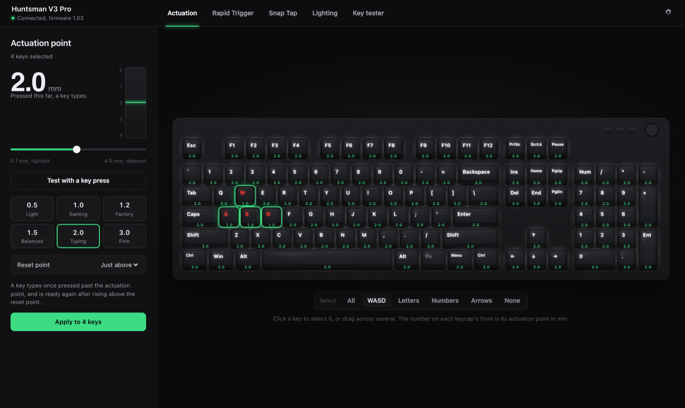
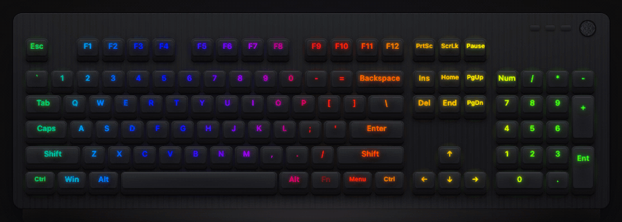
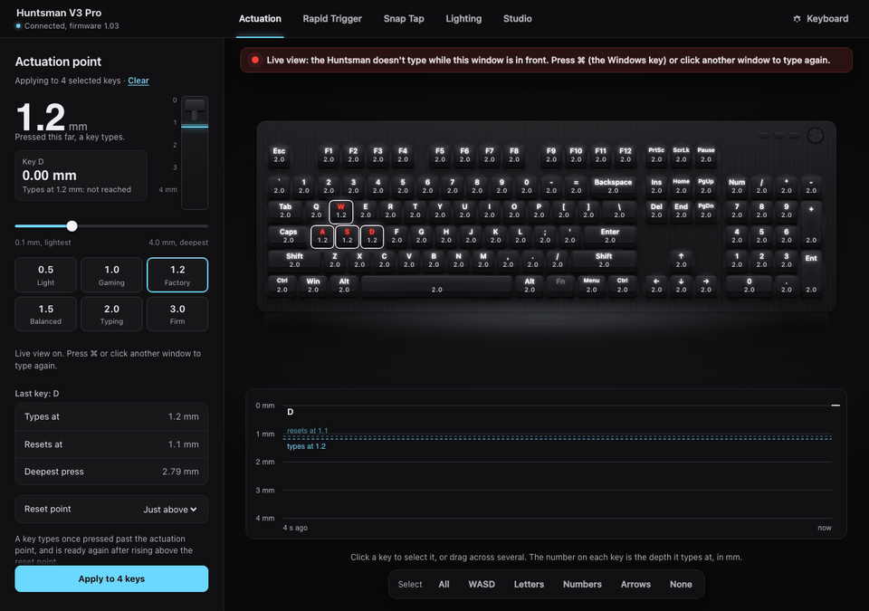
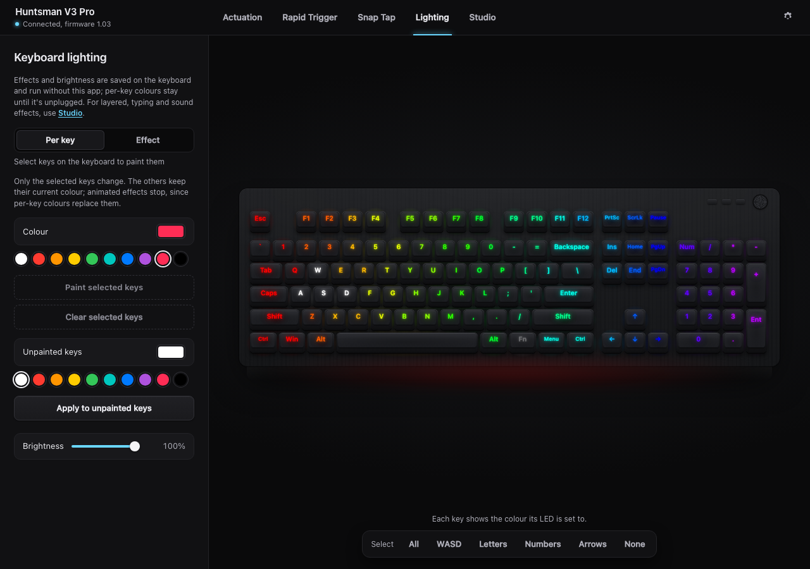
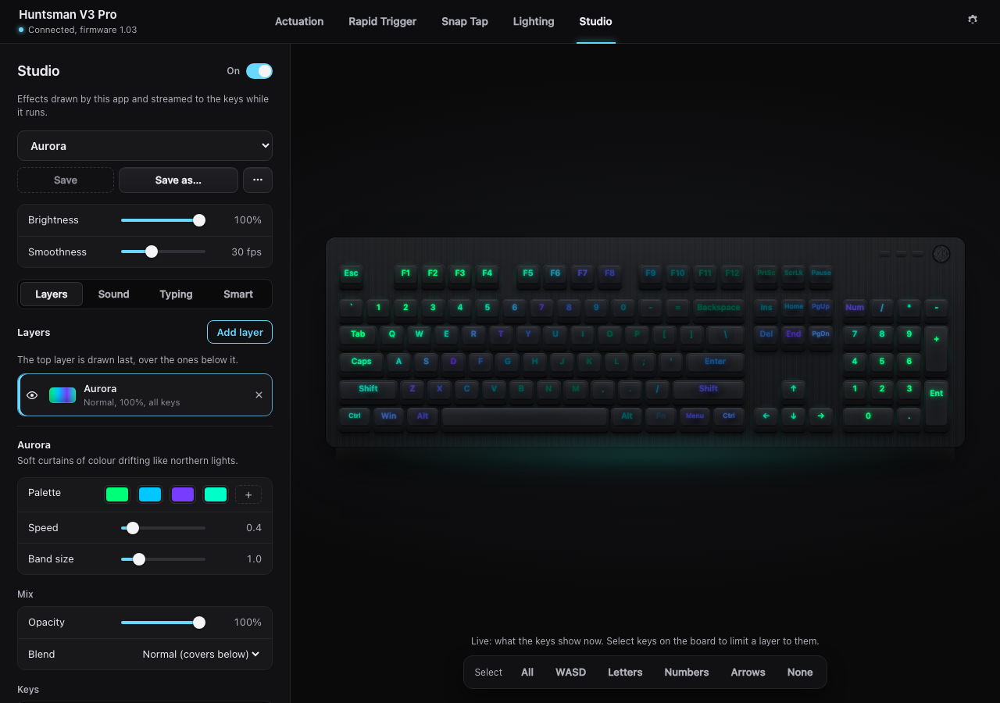
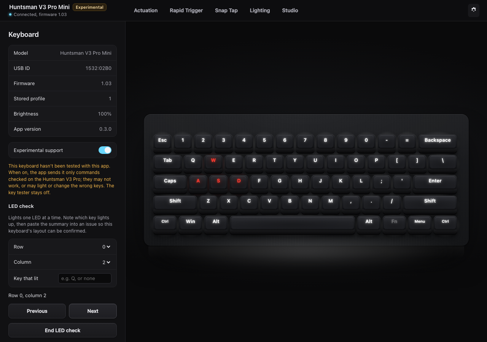

Actuation, to a tenth of a millimetre
Every key, anywhere from 0.1 mm (a feather) to 4.0 mm (the whole way down), with its reset point. It's stored on the keyboard, so it goes with the keyboard to other computers.
Saved on the keyboardv0.5.0 · Free & open source · macOS · Windows build (experimental)
Tune your Razer Huntsman V3 Pro on a Mac. No Synapse, no Windows, no virtual machine.
Per-key actuation from 0.1 to 4.0 mm, Rapid Trigger, Snap Tap, per-key RGB, and a lighting studio that reacts to your typing and your music.

Features
The Huntsman V3 Pro has analog optical switches you can set to a tenth of a millimetre. Here's how you set them, and light them, on a Mac.

Every key, anywhere from 0.1 mm (a feather) to 4.0 mm (the whole way down), with its reset point. It's stored on the keyboard, so it goes with the keyboard to other computers.
Saved on the keyboard
Open Actuation and press a key on the Huntsman. No button to click: it sinks on the board, a meter follows it, a trace names it and draws its travel, and the panel shows where it typed, where it reset and how deep you pressed. While the window is in front on Actuation the Huntsman doesn't type; press ⌘ (the Windows key) on it, or click another window, and it types again. Offered on the Huntsman V3 Pro (1532:02A6), the one model tested with this app.
Recorded in demo mode (simulated key presses, not a hardware recording).
Fires a key again as soon as it moves down by the press distance after rising by the release distance, anywhere in its travel.
Confirmed on a V3 ProTakes one pair of keys (usually A and D): while both are held, only the one pressed last counts.
Confirmed on a V3 Pro Sent again by the lighting serviceKey presses and sound are processed in memory, frame by frame, to draw the lights. Nothing is recorded, logged or sent anywhere. No account, no telemetry.

Static, breathing, spectrum, wave, reactive and starlight run on the keyboard and are saved on it. Or select keys and paint them. Colours are corrected so the keys match the colour you pick.

Layers, 17 effects and fourteen built-in presets, reacting to your typing and your music. Studio runs in a small background lighting service, so close the app and your aurora keeps drifting.

Experimental support for six more Huntsman models: untested so far, with guessed LED positions, plus an LED check to map their keys. This screenshot is from demo mode, which previews any model without a keyboard; it isn't a hardware result.
Help test a modelScreenshots and GIFs are from the app's demo mode, which simulates a keyboard.
Synapse for Mac vs Huntsman for Mac
Razer Synapse for Mac doesn't support the Huntsman V3 Pro's settings (at the time of writing). Huntsman for Mac talks to the keyboard directly over USB from macOS.
| On a Huntsman V3 Pro, from macOS | Synapse for Mac | Huntsman for Mac |
|---|---|---|
| Change the actuation point (0.1 to 4.0 mm, per key) | No | Yes |
| Rapid Trigger | No | Yes |
| Per-key lighting | No | Yes |
Supported hardware
Wired only. Only the Huntsman V3 Pro (1532:02A6) has been tested with this app. The other models are experimental: the app sends them only commands checked on the V3 Pro, and their LED positions are a guess until a tester confirms them with the LED check.
| Model | USB ID | Status | What the app offers |
|---|---|---|---|
| Huntsman V3 Pro | 1532:02A6 | ✓ Tested | Everything: actuation, Rapid Trigger, Snap Tap, lighting, per-key colours, Studio, key tester |
| Huntsman V3 Pro TKL | 1532:02A7 | Experimental, untested | Lighting, per-key colours, Studio, actuation, Rapid Trigger, Snap Tap. No key tester |
| Huntsman V3 Pro 8KHz | 1532:02CF | Experimental, untested | Lighting, per-key colours, Studio, actuation, Rapid Trigger, Snap Tap. No key tester |
| Huntsman V3 Pro Mini | 1532:02B0 | Experimental, untested | Lighting, per-key colours, Studio, actuation, Rapid Trigger, Snap Tap. No key tester |
| Huntsman V2 | 1532:026C | Experimental, untested | Lighting, per-key colours and Studio only |
| Huntsman V2 TKL | 1532:026B | Experimental, untested | Lighting, per-key colours and Studio only |
| Huntsman V2 Analog | 1532:0266 | Experimental, untested | Lighting, per-key colours, Studio, actuation (1.62 to 3.56 mm). No Rapid Trigger, Snap Tap, key tester, factory depth reset or starlight effects |
On the experimental models none of this has been seen working yet, and nothing that changes them is sent until you turn on Keyboard → Experimental support. Macs: tested on Apple silicon with macOS 26, and the 0.5.0 installer on macOS 27.2. The installer needs Apple silicon and macOS 14 or later; on an Intel Mac, install from source. Intel Macs and macOS versions before 26 are untested, and a report either way helps. On Windows every model, the V3 Pro too, is experimental and untested, with no key tester.
Quick start
A normal Mac installer for Apple silicon (M1 or later) and macOS 14 or later. No Homebrew, Python or Terminal needed.
Huntsman-for-Mac-<version>.pkg from the latest release.
It isn't signed with an Apple Developer ID, so macOS blocks it the first time. Click Done, then System Settings → Privacy & Security → Open Anyway and your password (not yet confirmed by us; if it doesn't work, see the Terminal line below).
Introduction, License (GPL), Install (your Mac password). The app goes in /Applications with its own Python and libusb.
From Applications or Spotlight. The first time, it sets up the lighting service and the keyboard icon appears in the menu bar.
Stuck at Open Anyway? Remove the download mark in Terminal with xattr -d com.apple.quarantine ~/Downloads/Huntsman-for-Mac-<version>.pkg and open the pkg again. A Developer ID-signed, notarized installer isn't available yet. If you installed with install.sh before, the installer moves that copy to the Trash and keeps your settings. To remove the app: Keyboard → Uninstall….
git clone https://github.com/samir777-eng/huntsman-for-mac.git
cd huntsman-for-mac
./install.shInstalls the app in ~/Applications, libusb through Homebrew if it's missing, and the lighting service, then opens the app. You need Python 3.11 or newer, and Homebrew if libusb isn't installed yet. Full details, updating and uninstalling are in the README.
Windows build · experimental
Version 0.4.0 adds a Windows build: the same app as one Huntsman.exe, no Python or installer needed.
Huntsman-for-Windows-<version>.zip from the latest release.
Right-click, Extract All, somewhere you'll keep it. Keep the Huntsman folder together.
Quit Razer Synapse, including its tray icon. While it runs, the app leaves the keyboard alone.
It's unsigned, so SmartScreen may ask: More info, then Run anyway. Then turn on Keyboard → Experimental support.
Testers wanted
Nobody has tried the six experimental models with this app yet. Hardware reports are the most useful thing right now: experimental models, Windows, Intel Macs and older macOS.
Safety
The app writes to the keyboard's memory using commands the community worked out by reverse engineering, not from Razer documentation. So it's careful.
Every command checks that the keyboard's reply matches the request and passes its checksum. Actuation writes are also read back key by key.
On first launch the app copies every key's settings to a snapshot; restore-snapshot puts them back.
Restore factory depth puts every key back to 1.2 mm and turns off Rapid Trigger and Snap Tap.
The tester only runs while the window is in front on Actuation. The keyboard types again when you switch tab or app, minimise the window, after 5 minutes without a key press, when you close the window or when the app quits.
FAQ
Not at the time of writing: Razer Synapse for Mac doesn't support the Huntsman V3 Pro's settings, so actuation, Rapid Trigger and per-key lighting can't be changed there. This app fills that gap.
Open Huntsman for Mac, select keys (or none for all keys), pick a depth between 0.1 and 4.0 mm and click Apply. The setting is stored on the keyboard, so it stays after unplugging and also works on other computers.
Yes, from the Rapid Trigger and Snap Tap tabs. Both have been confirmed on a Huntsman V3 Pro; please report how they work on other models.
Yes. Use Lighting → Per key to colour individual keys, or Effect for spectrum, wave, breathing, reactive and starlight. Ripple and other typing effects are in Studio.
No. It talks to the keyboard directly over USB from macOS.
There's an experimental Windows build (Huntsman-for-Windows-<version>.zip on the releases page), but it has never been run on a Windows PC with a keyboard, so nobody knows yet. On Windows every model needs Experimental support switched on, there's no key tester, and the app leaves the keyboard alone while Razer Synapse is running. See Windows.
Yes. It's open source under GPL-3.0-or-later, with no account, no telemetry and no paid tier.
The Razer Huntsman V3 Pro (full size, USB ID 1532:02A6) is tested. The V3 Pro TKL, V3 Pro 8KHz, V3 Pro Mini, V2, V2 TKL and V2 Analog have experimental support: untested, and off until you turn on Experimental support. See Supported hardware.
Turn on Experimental support, run the LED check, and report what worked and what didn't. The steps are in CONTRIBUTING.md.
While the key tester runs, the keyboard doesn't type. It's only offered on a model that has been tested, so an untested keyboard can't be left unable to type. The V2 and V2 TKL also have no analog keys to test.